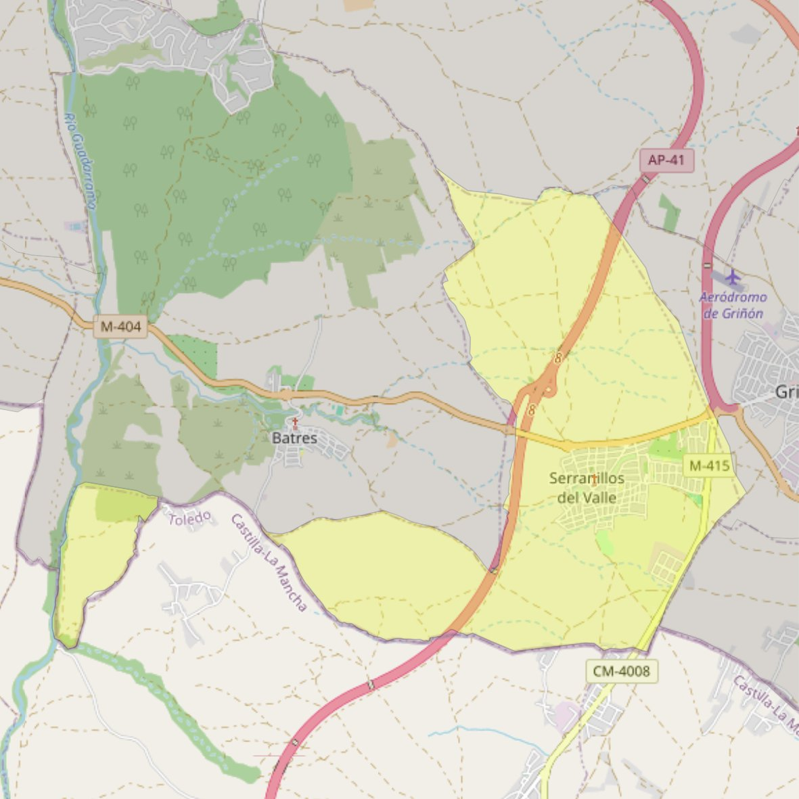

San Nicolás de Bari

- Arciprestazgo
- Griñón
- Población
- Serranillos del Valle
- Dirección postal
- c/ Iglesia, 1
- Código postal
- 28979
- Extensión
- 13,28 km² (1.328 ha)
- Teléfono
- 918 138 124
- Correo electrónico
- sannicolasdebari-serranillos@diocesisgetafe.es